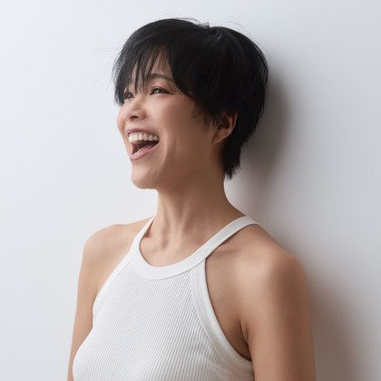
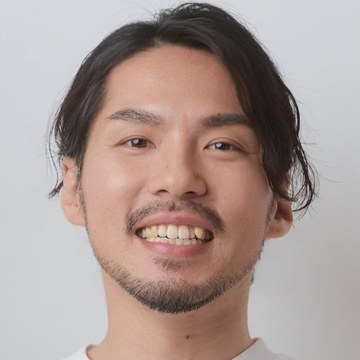
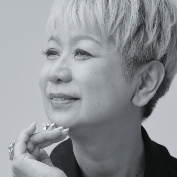
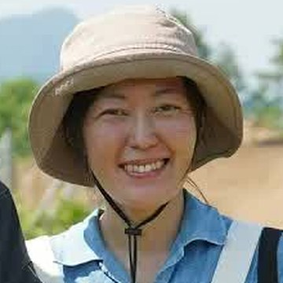

もどかしさを、
卒業する。
「オーガニックが、あたりまえ。」
な社会にしたいと、
日々がんばっているあなたへ
「オーガニックが、あたりまえ。」
な社会にしたいと、
日々がんばっているあなたへ
オーガニックを仕事にしている、
あなたへ。
「今の自分じゃ、オーガニックの
本当の良さを伝えきれない…」
そんなもどかしさ、
ここで卒業できます。
オーガニックは、体にいいものを選ぶことだけじゃない。
「どういう社会をつくりたいか」という問いそのもの。
確かな知識を身につけると、
伝え方の技術より先に、自信が戻ってきます。
ドイツ・ホーエンハイム大学大学院で有機農業を研究し、
延べ1,900人以上が学ぶ「ドイツIOBオーガニックスクール」を創立した私が、
その最初の授業をそのままお届けします。
無料でお渡しします（ご登録後すぐにメールでお届けします）
登録後すぐに、授業動画を無料でお届けします。教材のページをご案内するメールが届きます。届かない場合は、迷惑メールフォルダをご確認ください。
このあと、オーガニックの伝え方についてのメールをお送りします。配信はいつでも解除できます。

WHY FREE
私が目指しているのは、「オーガニックが、あたりまえ。」そんな社会です。でも、その社会は、私ひとりがオーガニックについて発信し続けても、つくれないと思っています。
お店で商品を届けている人。農業に関わっている人。美容や食、子どもたちの教育に関わっている人。地域で小さく活動を始めている人。それぞれの場所でオーガニックに関わる人が、自分の言葉で「なぜ私はこれを大切にしているのか」を話せるようになること。その言葉を聞いた誰かが、「そんな考え方があるんだ」と知ること。私は、その小さな対話の積み重ねが、社会を変えていくと思っています。
だから、この教材は無料にしました。知識を増やすだけで終わらず、あなたの仕事や活動の中で、ひとつでも「自分の言葉」が生まれたら嬉しいです。あなたの言葉から、またひとり、オーガニックを知る人が増えていく。そんな循環を、一緒につくっていけたらと思っています。
「オーガニックが、あたりまえ。」
な社会へ。
BEFORE → AFTER学ぶ前と、学んだあと
BEFORE
「オーガニックって何？」と
聞かれると、言葉に詰まる
そんなもどかしさと孤独を抱える日々は、
今日までです。
AFTER
学んだあと、
こう変わっていきます
あなたの言葉から、
お客様にとってのオーガニックの
見え方が変わっていきます。
ドイツ・アルゴイ地方にて
WHYなぜ言葉に詰まるのか
本を読んで、講座に出て、認証の資料も読み込んで、発信も続けてきた。それでも「自信を持って、これです」と言い切れない。
足りないのは、努力ではありません。
オーガニックは、種から生産、加工、流通、そして食卓までが1本につながっている分野です。どこか一箇所だけ詳しくなっても、全体の判断はできません。断片をいくら集めても、基準にはならない仕組みになっています。
そして日本では、この全体像を体系で教える場所が、ほとんどありませんでした。誰かが隠してきたのではなく、教育で扱われてこなかったのです。
VOICE受講生の声

猿田一生さん
美容室オーナー／THE ORIENTAL JOURNEY（千葉県柏市）代表
一般社団法人 日本サステナブルサロン協会 代表理事
従業員時代はこの想いが理解されず、日々孤独を感じていました。
IOBでの学びは、私の信念を確固たるものにし、自信を持って発信する力を与えてくれました。
そして家族のように何でも話し合える仲間と出会えたことが、私にとっては一生の宝です。
「オーガニック専門家コース」受講生より

川田むつみさん
オーガニックスーパー「クランデール」「ココシーズンズ」（千葉県松戸市）代表
株式会社かわた 取締役
お客様から「オーガニックって何ですか？」と尋ねられるたびに、自信を持って答えることができず、自分の無知さに直面しました。
IOBで学んだ、エビデンスに基づくオーガニックの知識は、食の専門家として、オーガニック商品を扱う経営者としてブレない「軸」となり、自信を与えてくれました。
「オーガニック専門家コース」受講生より
柳田夕希さん
ピラティス講師／フルオーガニック酵素ドリンク「Natural FLORA」製造販売
オーガニックという言葉は、美容とか健康にいいということしか私は知らなくて。そういうところじゃなくて、オーガニックが社会を変える仕組み、社会全体を幸せにする仕組みということを学んだのが、すごく自分の中で気づきがありました。
入ってなかったら、本当にビジネスも成り立たないですし、オーガニックのことを話せる仲間もいなかったと思います。

村田枝里さん
北海道・余市町／有機農家・料理人
もともと、オーガニックがいま世界で起きている問題の解決策になるという気持ちがありました。IOBに入って、その決意が揺るがないものになりましたね。
知識がないと選べない。選び方がわからない。知識があるということは、たくさんの選択肢の中から、自分の人生を決めていけるということ。
新しい扉が開けるよ。
ここに置いた言葉は、書籍とインタビュー動画で本人が語ったものをそのまま引用しています。
MATERIALS無料教材の中身
最初の
授業動画
「結局なに？」
の読みもの
認証の
1枚
ドイツIOBオーガニックスクール
オーガニックを、
自分の言葉で伝えるための
最初の授業
オーガニックを、
世界の定義から学び直す
知っている、から、自分の言葉で伝えられるへ。
まずは、最初の授業から始めてください。
受講生が最初に見る授業「有機農業の原理」を、要約せずにそのまま置いています。オーガニックが世界でどう定義されているのかを扱う回です。
最初の2本だけでも「オーガニックって、こういう考え方だったんだ」と、今までより少し広く見えてきます。
授業のあとは、「オーガニックって結局なに？」に自分の言葉で答えるための読みもの（約5分）と、「この認証、大丈夫ですか？」にその場で答えられる1枚へ、順番に進めるようにしています。スマホでそのまま視聴できます。
ACHIEVEMENTSこれまでの歩み
17年
ドイツ
在住
1,900名+
スクールの
延べ受講生
300名+
ビオセボン
年間従業員研修
PROFILEプロフィール
レムケなつこ
ドイツ在住オーガニック教育の専門家
20代の頃、ボリビアでJICA青年海外協力隊として、メキシコでJICA専門家として、途上国の生産者支援に携わりました。そこでオーガニックの社会的な意義に気づき、いまはドイツで学校を運営しています。
教えているのは、認証の知識だけではありません。自分が信じているものを、値段で比べられない形で届けるところまでを、一続きにして渡しています。オーガニックは、すべての命を幸せにする仕組み。それを文化にするところまでが、私の仕事だと思っています。
ORIGIN私の原点なぜ、ドイツIOB
オーガニックスクールなのか
20代、JICA青年海外協力隊としてボリビアへ渡りました。担当地域だけ、栄養失調や依存症、乳児死亡率が突出して高い。共通していたのは、大規模サトウキビ農園で働く出稼ぎ労働者たちでした。
帰国後に知ったのは、そのサトウキビの多くが白砂糖になり、当時の日本はその6割を輸入していたという事実です。加工食品や飲料を通じて、自分自身が知らないうちにその仕組みの一部になっていました。
なんとかしたい一心で、海外の論文を読み漁るなかで出会ったのが「オーガニック」という仕組みでした。研究を深めるため、有機農業の本場であるドイツの大学院へ。そこで、オーガニックなら社会の構造を変えられるという確信に変わりました。
ドイツIOBオーガニックスクールは、その確信から生まれています。
MISSION私の使命
オーガニックが広がることが、
社会を豊かにする。
オーガニック起業家が豊かになるということは、素晴らしいものを市場に循環させ、オーガニックを広げているということ。事業というツールを使ってオーガニックを広げる人は、その地域の水・土・生態系を守り、未来世代のことを思っている人です。
地域は全世界とつながっているから、それは地球全体の未来、私たちの未来そのものを守っていることでもある。だから、彼ら彼女らが豊かになることが決定的に大事だと思っています。
自分の言葉でオーガニックを伝える人が増え、その人の事業が続いていくこと。それが、「オーガニックが、あたりまえ。」な社会への一番確かな道だと思っています。
オーガニック起業家が
豊かになるのは、正しい。
JOURNEY受講生の歩み
一人で情報を集めている。同じ問いを持つ人が、まわりに誰もいない。
同じ問いを持つ仲間の中で、断片だった知識が体系につながっていく。9割以上の受講生が、他の受講生との交流を希望しています。
オーガニックを、自分の言葉で語れるようになる。同じ問いを持つ仲間と、確かめ合いながら続けていける。
BOOK著書

レムケなつこ 著
★ Amazon Kindle 総合1位獲得
「オーガニックを事業に取り入れたいけれど、自分の知識に自信がない」
「オーガニックのよさを伝えたいけれど、うまく説明できない」
「社会をよくしたい想いはあるものの、どう行動すべきかわからない」
―― そんな起業家やプレ起業家へ向けて、ドイツで15年積み上げてきたオーガニックのエビデンスと、「すべての命が幸せになる仕組み」としてのオーガニックを、入門書として一冊にまとめました。
ABOUT受け取る前に
すべて無料です。受け取ったあと、オーガニックの伝え方についてのメールをお送りします。読むだけでも十分に使えるものにしています。
この先に、体系立てて学べる有料のコースもありますが、まずはここに置いたものを持って帰ってください。出し惜しみはしていません。
「オーガニックが、
あたりまえ。」な社会へ
『オーガニックを、自分の言葉で伝えるための最初の授業』
ご登録のあとすぐに、
見はじめられます。
配信はいつでも解除できます。